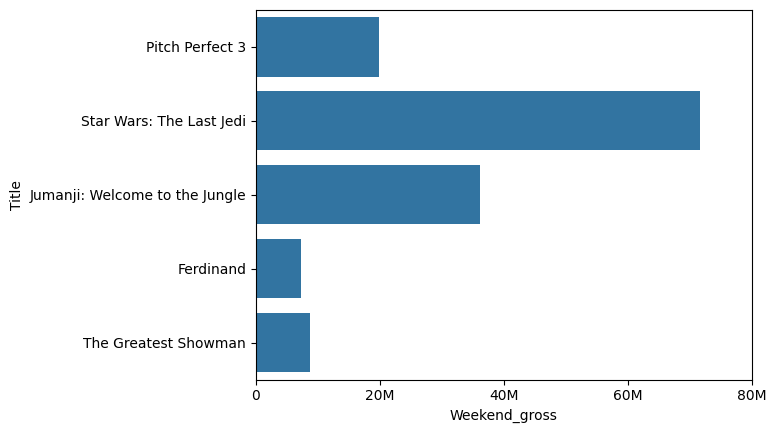
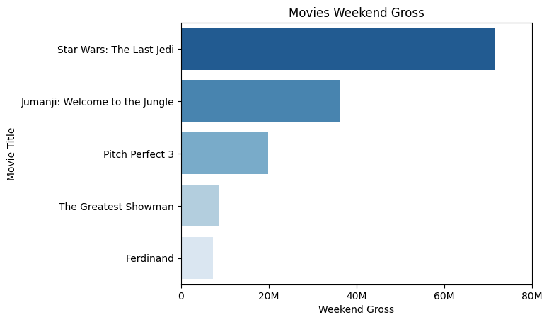
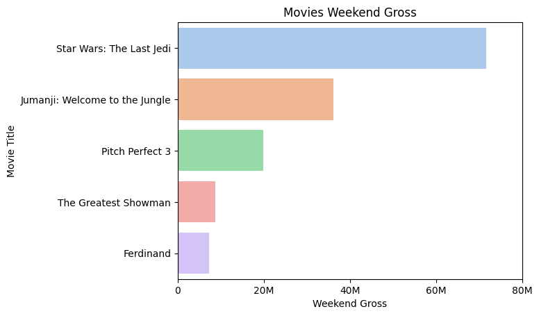
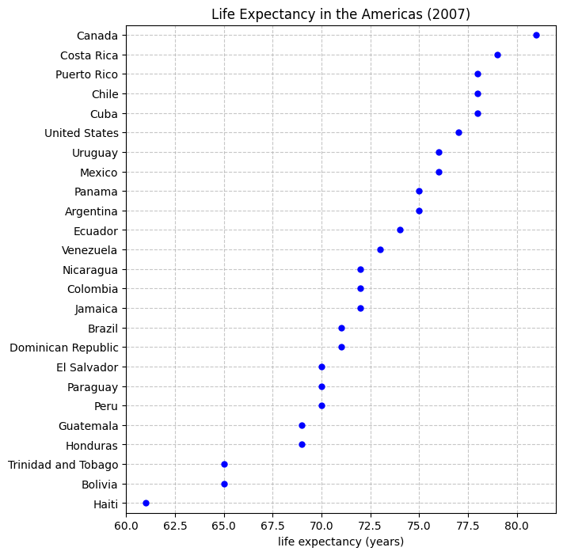

条形图绘制¶
素材¶
数据处理¶
导入必要库
import pandas as pd
import seaborn as sns
import matplotlib.pyplot as plt
df2=pd.read_csv("movies_weekend_gross.csv")
df2.head()
绘图¶
直接出图¶
sns.barplot(data=df2, x="Weekend_gross", y="Title")

这个图不便于读者了解票房的排名和差异。
对数据进行排序¶
# 排序依据 Weekend_gross，降序
df2_sorted = df2.sort_values(by="Weekend_gross", ascending=False)
# 保存排序后的数据，
df2_sorted.to_csv("movies_weekend_gross_sorted.csv", index=False)
# 重新基于排序后的数据绘图
sns.barplot(data=df2_sorted, x="Weekend_gross", y="Title")
pandas 在保存 CSV 时，默认会把 DataFrame 的行索引（index）也写进 CSV 文件，作为最左边的一列。加上 index=False 就告诉 pandas：不要把 index 写到 CSV 里。
添加刻度¶
xlim()用来设置横坐标（x 轴）的最小值和最大值，0 表示 x 轴的起始值，80000000 表示 x 轴的结束值。
xticks（）可以指定 x 轴刻度的位置，并指定对应刻度的显示文字。20M表示 20 million（两千万），是一种简写格式，更方便读者阅读。
# 增加刻度
plt.xlim(0, 80000000)
plt.xticks([0, 20000000, 40000000, 60000000, 80000000],
["0", "20M", "40M", "60M", "80M"])
# 添加X轴，Y轴和标题
plt.xlabel("Weekend Gross")
plt.ylabel("Movie Title")
plt.title("Movies Weekend Gross")
使用颜色进一步区分¶
在 seaborn 的绘图函数里，hue 是一个非常重要的参数，可用来指定"分类变量"，即让同一个 x 或 y 位置的条形（或点、线）按照类别再分组，显示成不同颜色。简单说：hue="某一列" ，seaborn 会根据这一列的不同取值，自动分配不同的颜色。
调色板有不同类型：
顺序调色板 (Sequential palettes)：颜色从浅到深连续变化，用来表现有大小顺序的数据，比如数值大小、概率高低。例子："Blues", "rocket", "mako"。
定性调色板 (Qualitative palettes)：每种颜色差别明显，没有深浅顺序，用来区分类别，比如不同的电影、城市。例子："deep", "bright", "Set2"。
顺序调色板
这里的 "Blues" 是一个 顺序调色板（Sequential colormap），默认颜色是从浅蓝到深蓝。大多数 seaborn / matplotlib 的调色板都支持加 "_r" 来反转，Blues_r，表示从深蓝到浅蓝。
sns.barplot(data=df2_sorted, x="Weekend_gross", y="Title",hue="Title",dodge=False, palette="Blues_r")

定性调色板
palette可选择预制调色板
你可以把 "pastel" 换成其他名字，比如：
"deep"
"bright"
"muted"
"colorblind"
"Set2"
"Paired"
"rocket"
"RdBu"
# 替换上一步的代码，其他不变
sns.barplot(data=df2_sorted, x="Weekend_gross", y="Title",hue="Title",dodge=False, palette="pastel")
Pastel 配色的效果

点图绘制¶
用点的位置表示数值，不强调面积或长度，不一定要从零开始，可以聚焦在一个区间，突出细微差别。
适用场景：
数值范围相对集中时：比如预期寿命（60–81 岁），如果用 bar 图，柱子差别不大；点图更能突出小的差异。
要减少视觉负担时：点比条形更简洁，不会因为条太长而分散注意力。
需要比较多个组的分布：点图能清晰显示每组的具体位置，适合多个条件对比。
import pandas as pd
import seaborn as sns
import matplotlib.pyplot as plt
df3=pd.read_csv('life_expectancy_americas_2007.csv')
# 绘制点图
plt.figure(figsize=(7, 8))
sns.stripplot(
data=df,
x="LifeExp",
y="Country",
color="blue",
size=6,
jitter=False,
orient="h"
)
plt.xlabel("life expectancy (years)")
plt.ylabel("")
plt.title("Life Expectancy in the Americas (2007)")
plt.xlim(60, 82)
# 开启网格
plt.grid(True, axis="both", linestyle="--", alpha=0.7)
plt.show()
